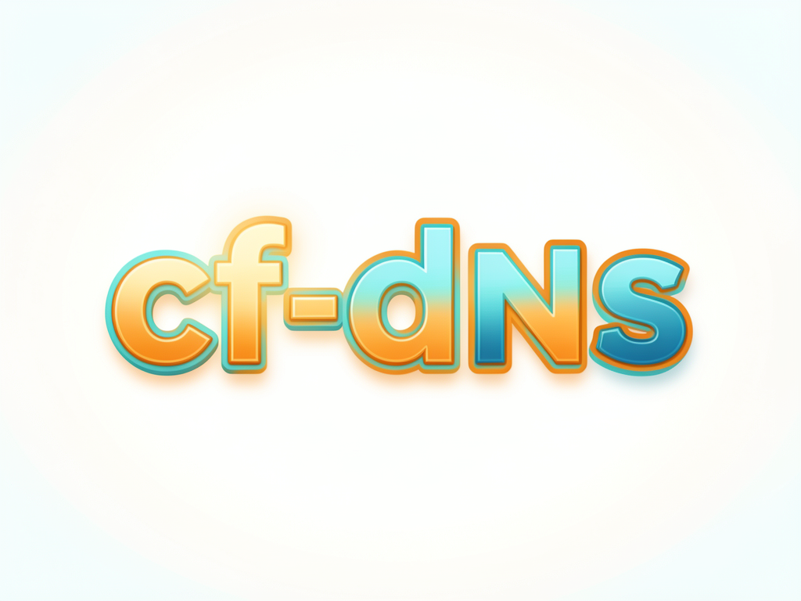

Um script Python de arquivo êºnico que cria, lista e apaga registros no Cloudflare pela API. Inclui o par CNAME + TXT que o Vercel pede para verificar um subdomêÂnio novo.

O painel do Cloudflare ê© ê³timo para olhar e pê©ssimo para repetir. Este script faz a mesma coisa por API, do jeito que dê¡ para versionar, revisar e rodar de novo amanhê£.
Nada de pip install. Copie o cf-dns.py para qualquer mê¡quina com Python 3 e ele roda ê¢â¬â servidor novo, container, VPS recê©m-criada.
A credencial vem da variê¡vel CLOUDFLARE_API_TOKEN ou de um .env apontado por CF_ENV_FILE. Nenhum segredo mora no repositê³rio.
O subcomando vercel cria o CNAME e o TXT de verificaê§ê£o de uma vez, jê¡ com o proxy desligado ê¢â¬â que ê© o detalhe que costuma travar a verificaê§ê£o.
Nê£o hê¡ mê¡gica: o script conversa com a API v4 do Cloudflare. O que ele adiciona ê© a ordem segura ê¢â¬â olhar antes de escrever.
GET /zones?name=<dominio> devolve o zone_id. Todo registro pendura nesse id ê¢â¬â ê© sempre o primeiro passo.
GET /zones/<id>/dns_records?name=ê¢â¬Â¦ mostra o que jê¡ estê¡ lê¡. êâ° o que evita descobrir um conflito sê³ depois de quebrar o site.
POST cria e DELETE /dns_records/<record_id> remove. O list imprime o id de cada registro, que ê© o que o delete consome.
Nê£o hê¡ serviê§o para subir, nem daemon, nem banco. O script ê© stateless: cada execuê§ê£o ê© uma conversa curta com a API.
Qualquer versê£o 3.x que sua distro trouxer. Nenhum pacote externo ê© importado.
# conferir python3 --version
No painel: My Profile ê¢â â API Tokens ê¢â â Create Token, template Edit zone DNS. Permissê£o Zone ê¢â â DNS ê¢â â Edit nas zonas que vocêª vai mexer. O token aparece uma êºnica vez.
# guardar fora do git echo 'CLOUDFLARE_API_TOKEN=SEU_TOKEN' >> ~/.env chmod 600 ~/.env
A zona precisa jê¡ estar na conta e o token precisa enxergê¡-la. Se nê£o enxergar, o script diz isso em vez de falhar em silêªncio.
# teste de fumaê§a ./cf-dns.py list ARCKHê AI
Cinco passos. O quarto ê© o que vocêª vai repetir sempre.
O repositê³rio inteiro ê© o script mais a documentaê§ê£o. Copie o arquivo para onde seu $PATH alcanê§a.
git clone https://github.com/linnoff88-dev/cf-dns install -m 755 cf-dns/cf-dns.py ~/bin/cf-dns.py
Duas formas: variê¡vel de ambiente, ou um arquivo .env indicado por CF_ENV_FILE. Sem nenhuma das duas, o script recusa e explica o motivo.
# variê¡vel de ambiente export CLOUDFLARE_API_TOKEN=seu_token # ou apontando um arquivo export CF_ENV_FILE=~/.env
Sempre. O list mostra tipo, nome, valor, estado do proxy e o id de cada registro ê¢â¬â e ê© assim que vocêª descobre um A ocupando o host que vocêª ia usar.
./cf-dns.py list ARCKHê AI # a zona inteira ./cf-dns.py list ARCKHê AI dlp2 # sê³ um nome
O nome pode ser o subdomêÂnio puro (rede) ou o domêÂnio completo. O TTL padrê£o ê© 60 segundos ê¢â¬â bom enquanto algo estê¡ sendo verificado.
# A apontando pra um IP ./cf-dns.py add ARCKHê AI A rede 192.168.2.99 # CNAME com TTL maior ./cf-dns.py add ARCKHê AI CNAME app destino.exemplo.com --ttl=300 # com o proxy laranja ligado (sê³ quando fizer sentido) ./cf-dns.py add ARCKHê AI A site 203.0.113.10 --proxied
O delete usa o id que o list imprimiu ê¢â¬â nê£o o nome. êâ° proposital: vocêª tem que ver o registro antes de removêª-lo.
./cf-dns.py list ARCKHê AI dlp2 ./cf-dns.py delete ARCKHê AI 76d14e9482f4b03f9d05a3c643f6cca7
Comandos reais, tirados de uso de verdade nos domêÂnios do ARCKHê.
O Vercel pede duas coisas: um CNAME apontando pro vercel-dns e um TXT em _vercel provando que o domêÂnio ê© seu. O subcomando vercel faz as duas, jê¡ com proxy desligado ê¢â¬â com o proxy ligado a verificaê§ê£o nê£o passa.
./cf-dns.py vercel ARCKHê AI dlp2 \ 820ed52053a39f8f.vercel-dns-017.com \ vc-domain-verify=dlp2.ARCKHê AI,5bc6ac41fe34ada1f4f9
Vê¡rios TXT em _vercel convivem sem problema ê¢â¬â um por subdomêÂnio. Depois que o Vercel fica verde, o TXT daquele subdomêÂnio pode sair.
Dê¡ para usar DNS pêºblico apontando para IP privado ê¢â¬â resolve sê³ para quem estê¡ na rede (ou na VPN). O proxy tem que ficar desligado: o Cloudflare nê£o proxia endereê§o privado.
./cf-dns.py add ARCKHê AI A rede 192.168.2.99 # -> rede.ARCKHê AI responde 192.168.2.99 dentro da LAN
A ferramenta ê© pequena de propê³sito: um arquivo que cabe na cabeê§a e que vocêª lêª inteiro antes de confiar nela.
.env. O script nê£o imprime o valor em lugar nenhum, nem em mensagem de erro.list antes de qualquer alteraê§ê£o e anote o valor antigo antes de apagar. Um A e um CNAME nê£o podem coexistir no mesmo host ê¢â¬â trocar um pelo outro derruba o que estava lê¡.--dry-runImprimir a chamada que seria feita sem executê¡-la, para revisar mudanê§a em lote antes de aplicar.